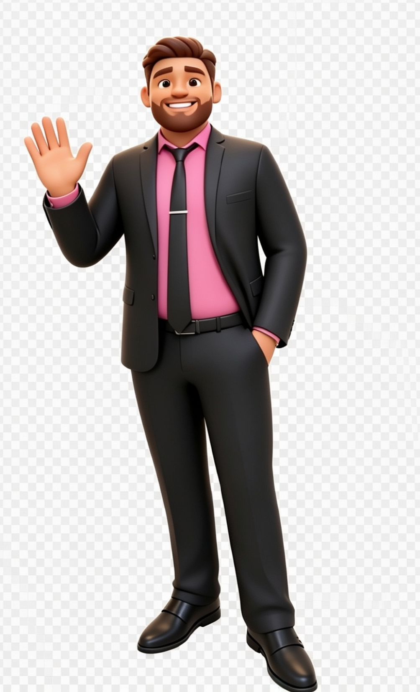

👨💻
Você concluiu o mini curso de Introdução ao DoGoBlock com sucesso! Agora você já conhece o aplicativo e está pronto para programar com blocos! 🐼✨
Você precisa de no mínimo 16 acertos para concluir. Revise os módulos com calma e tente de novo — você consegue! 💪